Toppoppgåver
Finn ut kva brukarane faktisk kjem for å gjere – og mål om dei får det til.
Discovery +
Top task survey
Top task survey
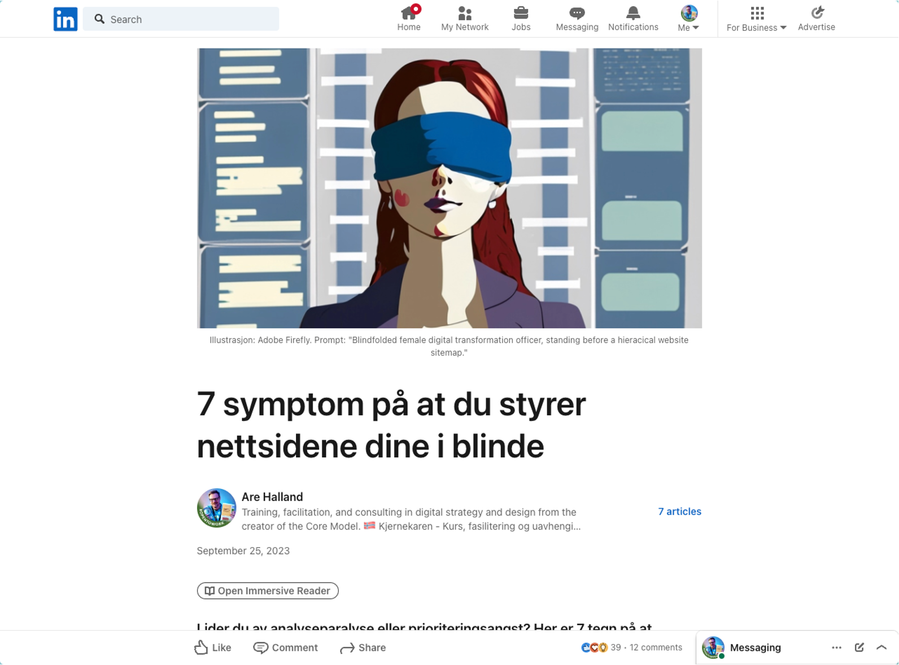
Prioriterings-angst og analyse-paralyse
Organisasjons-blindskap, synsing og kunde-avstand
7 symptom på at du styrer nettsidene dine i blinde

Top tasks are the small set of tasks that matter most to your customers.
– Gerry McGovern
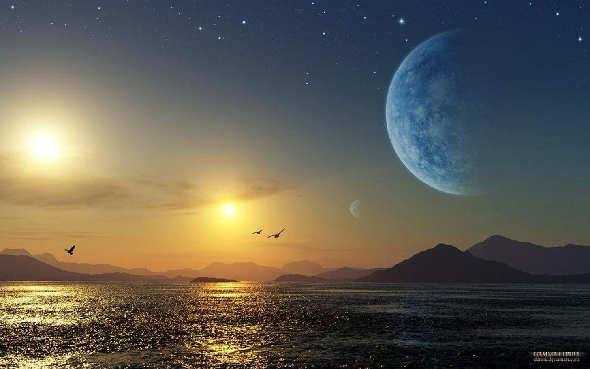
Toppoppgåver
Gjennomførings-grad
To tal å styre etter
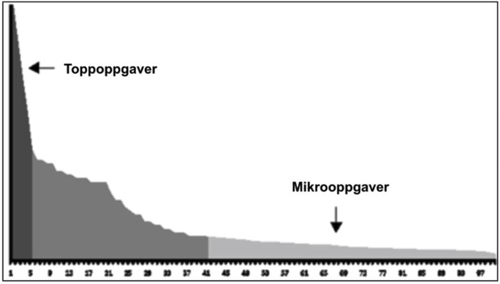
ALLTID
Webstatistikk
Søkjelogg
Henvendingar
Webstatistikk
Søkjelogg
Henvendingar
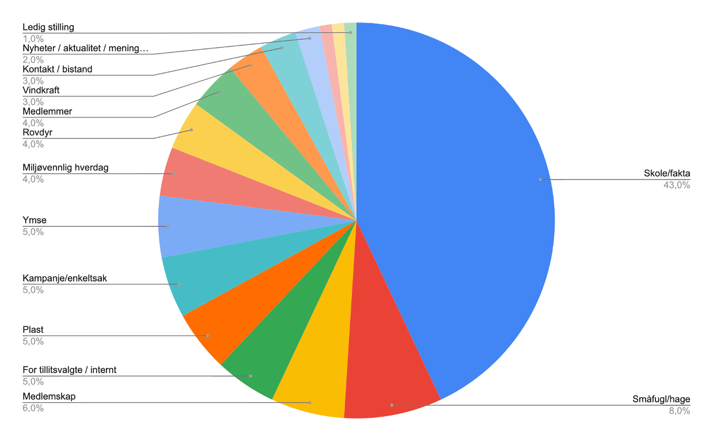
Naturvern-forbundet
Toppoppgåver
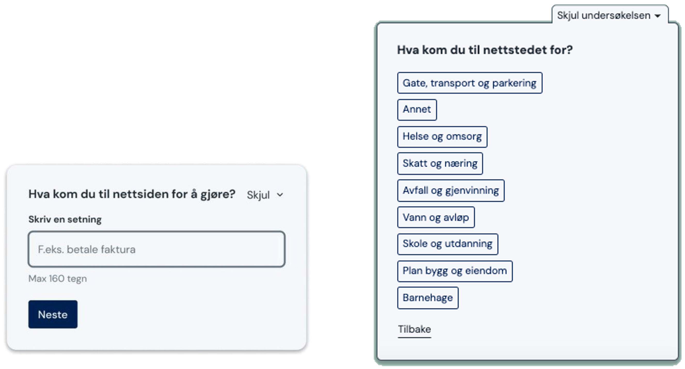
Discovery survey
Top task survey
Discovery survey
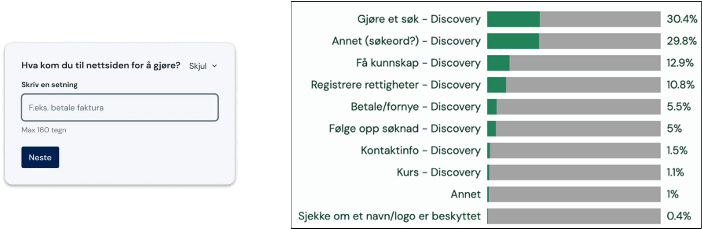
Patentstyret etter tagging av svar
Gjennomføringsgrad
Får kundane / brukarane gjort det dei kom for?
Gjennomføringsgrad
Det viktigaste måltalet for om ein informasjonsnettstad fungerer eller ikkje
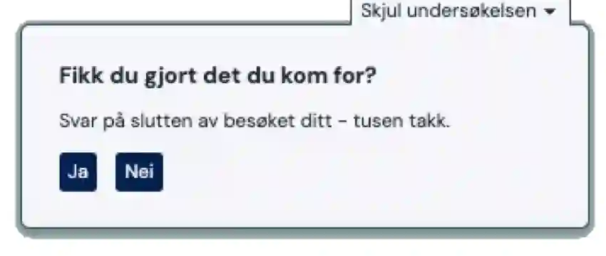
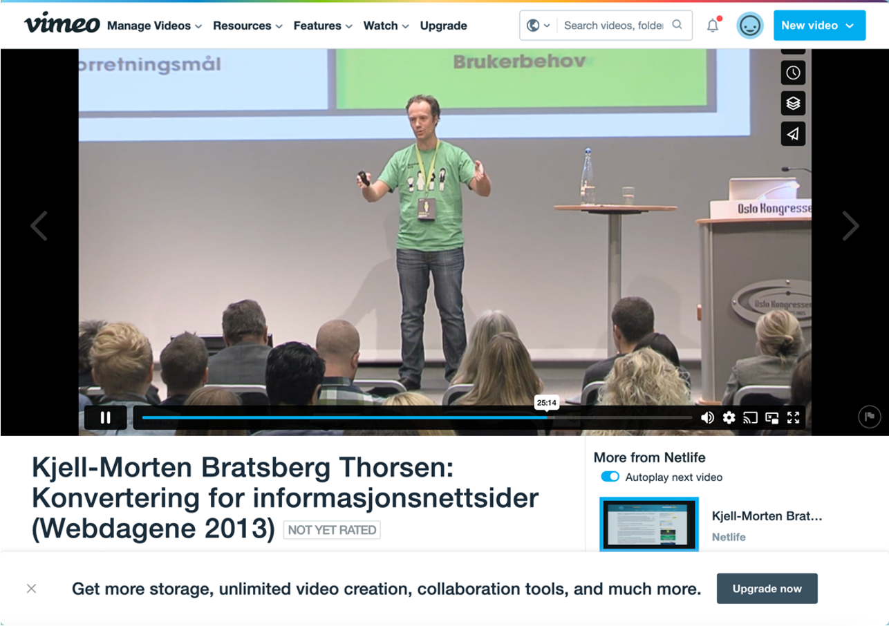
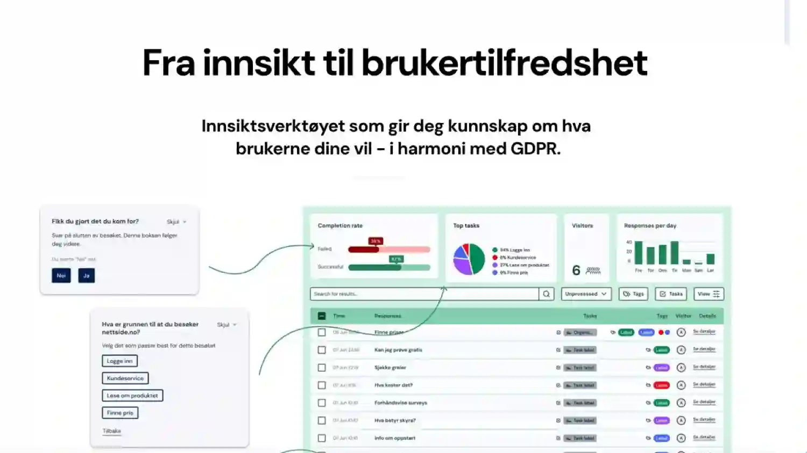
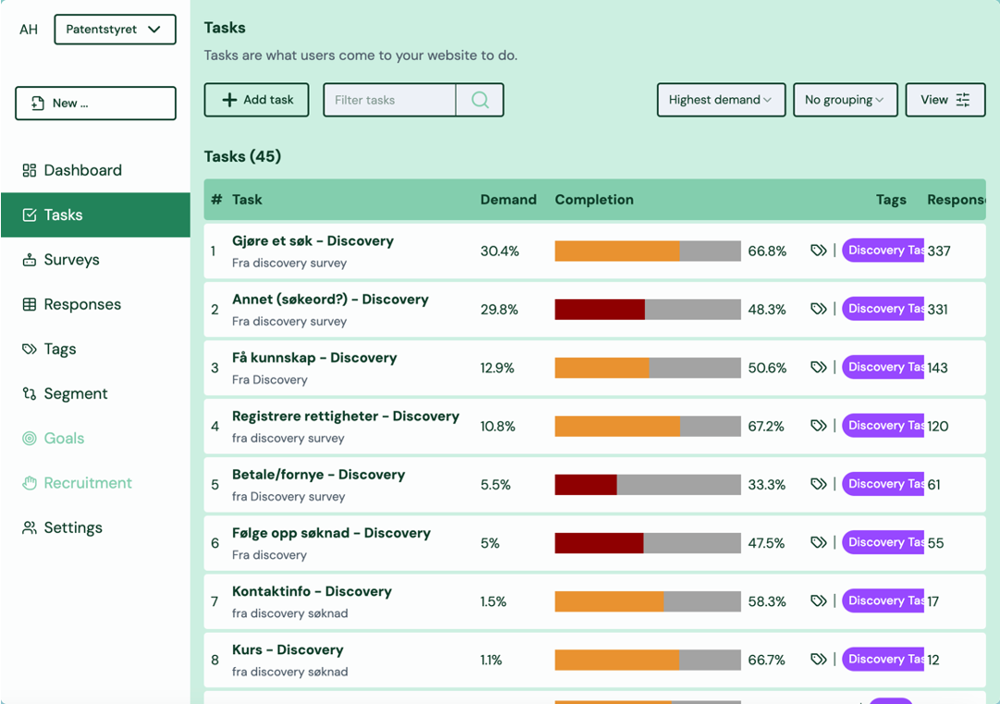
Patentstyret
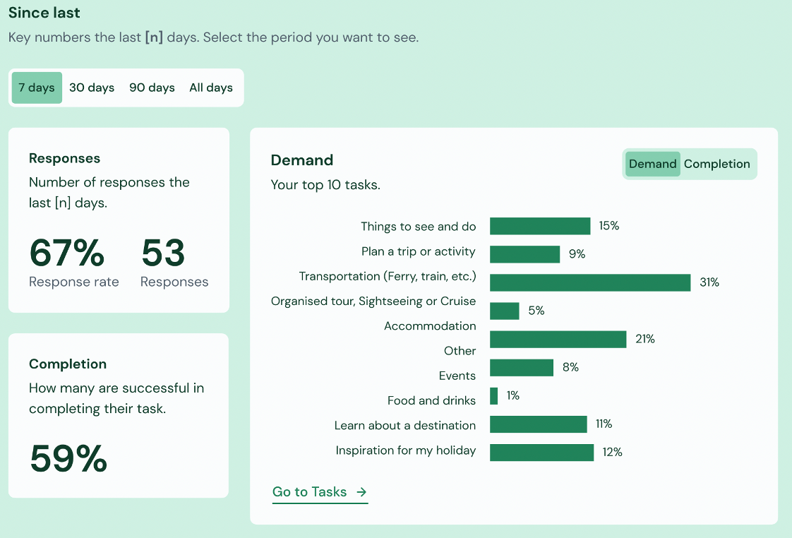
Felles bilete, på tvers av organisasjonen
Kontinuerleg forbetring
Korleis kan vi jobbe systematisk over tid?
Gjennomføringsgrad
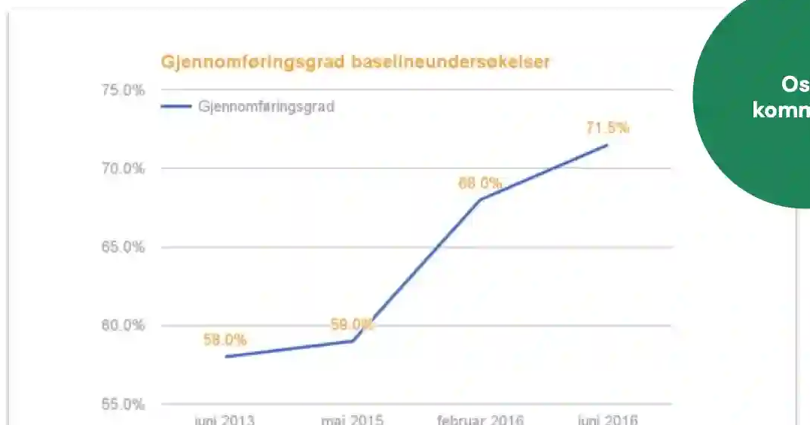
Oslo kommune
Takk for i dag!